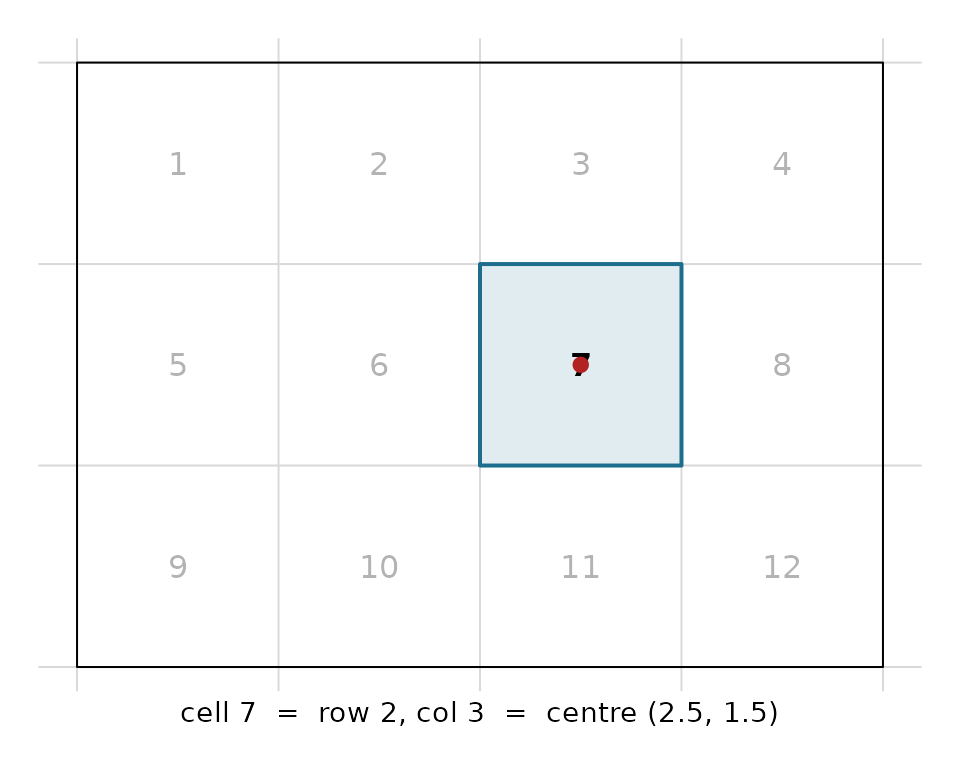

Overview
Cell operations are at the heart of raster grid logic. This vignette covers:
- Converting between cell indices and x,y coordinates
- Converting between cell indices and row/column positions
- Working with extents from cells
- Finding cells within an extent
All functions use the standard vaster convention:
dimension is c(ncol, nrow) and
extent is c(xmin, xmax, ymin, ymax).
Cell Indexing
Cells are numbered starting from 1 at the top-left corner, proceeding row-wise (left-to-right, then top-to-bottom):
1 2 3 4
5 6 7 8
9 10 11 12
## define a simple 4x3 grid
dimension <- c(4, 3) # 4 columns, 3 rows
extent <- c(0, 4, 0, 3) # xmin=0, xmax=4, ymin=0, ymax=3
n_cell(dimension)
#> [1] 12
n_col(dimension)
#> [1] 4
n_row(dimension)
#> [1] 3The rest of this vignette moves between three ways of naming the same cell: its cell index, its row/column, and the x,y coordinate of its centre. Cell 7 of this grid, for example, is all three at once:
dm <- c(4L, 3L); ex <- c(0, 4, 0, 3)
cn <- seq_len(n_cell(dm)); ctr <- xy_from_cell(dm, ex, cn)
rc <- rowcol_from_cell(dm, ex, 7); xy7 <- xy_from_cell(dm, ex, 7)
op <- par(mar = c(2, 1, 1, 1))
plot(NA, xlim = c(0, 4), ylim = c(0, 3), asp = 1, axes = FALSE, xlab = "", ylab = "")
abline(v = x_corner(dm, ex), h = y_corner(dm, ex), col = "grey85")
rect(ex[1], ex[3], ex[2], ex[4])
text(ctr[, 1], ctr[, 2], cn, col = "grey70")
rect(2, 1, 3, 2, col = "#1C6E8C22", border = "#1C6E8C", lwd = 2)
text(2.5, 1.5, "7", font = 2)
points(xy7[1], xy7[2], pch = 19, col = "firebrick")
mtext(sprintf("cell 7 = row %d, col %d = centre (%.1f, %.1f)",
rc[1], rc[2], xy7[1], xy7[2]), side = 1, line = 0, cex = 0.9)
par(op)Cells and Coordinates
From cells to coordinates
Use xy_from_cell() to get the centre
coordinates of cells:
## single cell
xy_from_cell(dimension, extent, 1)
#> [,1] [,2]
#> [1,] 0.5 2.5
## multiple cells
xy_from_cell(dimension, extent, c(1, 4, 9, 12))
#> [,1] [,2]
#> [1,] 0.5 2.5
#> [2,] 3.5 2.5
#> [3,] 0.5 0.5
#> [4,] 3.5 0.5
## all cells
xy_from_cell(dimension, extent, seq_len(n_cell(dimension)))
#> [,1] [,2]
#> [1,] 0.5 2.5
#> [2,] 1.5 2.5
#> [3,] 2.5 2.5
#> [4,] 3.5 2.5
#> [5,] 0.5 1.5
#> [6,] 1.5 1.5
#> [7,] 2.5 1.5
#> [8,] 3.5 1.5
#> [9,] 0.5 0.5
#> [10,] 1.5 0.5
#> [11,] 2.5 0.5
#> [12,] 3.5 0.5For just x or y coordinates:
x_from_cell(dimension, extent, 1:4)
#> [1] 0.5 1.5 2.5 3.5
y_from_cell(dimension, extent, c(1, 5, 9))
#> [1] 2.5 1.5 0.5From coordinates to cells
Use cell_from_xy() to find which cell contains given
coordinates:
## coordinates at cell centres
xy <- cbind(c(0.5, 1.5, 2.5), c(2.5, 1.5, 0.5))
cell_from_xy(dimension, extent, xy)
#> [1] 1 6 11
## coordinates outside the grid return NA
xy_outside <- cbind(c(-1, 5), c(1.5, 1.5))
cell_from_xy(dimension, extent, xy_outside)
#> [1] NA NA
## coordinates on cell boundaries go to the cell below/right
## except at the grid edge where they go to the last cell
xy_edge <- cbind(c(1.0, 4.0), c(2.0, 0.0))
cell_from_xy(dimension, extent, xy_edge)
#> [1] 6 12Cells and Row/Column
From cells to row/column
## get row and column for cells
rowcol_from_cell(dimension, extent, 1:12)
#> row col
#> [1,] 1 1
#> [2,] 1 2
#> [3,] 1 3
#> [4,] 1 4
#> [5,] 2 1
#> [6,] 2 2
#> [7,] 2 3
#> [8,] 2 4
#> [9,] 3 1
#> [10,] 3 2
#> [11,] 3 3
#> [12,] 3 4For just row or column:
row_from_cell(dimension, 1:12)
#> [1] 1 1 1 1 2 2 2 2 3 3 3 3
col_from_cell(dimension, 1:12)
#> [1] 1 2 3 4 1 2 3 4 1 2 3 4Note that row_from_cell() and
col_from_cell() only need dimension since
row/column positions don’t depend on extent.
From row/column to cells
Get cells for specific row/column combinations:
## single cell at row 2, column 3
cell_from_row_col(dimension, row = 2, col = 3)
#> [1] 7
## multiple cells (vectorized, with recycling)
cell_from_row_col(dimension, row = 1:3, col = 1:3) # diagonal cells
#> [1] 1 6 11Get all cells in specific rows or columns:
## all cells in row 2
cell_from_row(dimension, 2)
#> [1] 5 6 7 8
## all cells in column 3
cell_from_col(dimension, 3)
#> [1] 3 7 11Get the cross-product of rows and columns (all combinations):
## all cells in rows 1-2 AND columns 2-3
cell_from_rowcol_combine(dimension, row = 1:2, col = 2:3)
#> [1] 2 3 6 7Rows/Columns and Coordinates
Convert directly between row/column indices and coordinates:
## x coordinate of each column (centre)
x_from_col(dimension, extent, 1:4)
#> [1] 0.5 1.5 2.5 3.5
## y coordinate of each row (centre)
y_from_row(dimension, extent, 1:3)
#> [1] 2.5 1.5 0.5
## which column contains this x coordinate
col_from_x(dimension, extent, c(0.5, 2.5, 3.9))
#> [1] 1 3 4
## which row contains this y coordinate
row_from_y(dimension, extent, c(2.5, 1.5, 0.1))
#> [1] 1 2 3Cells and Extents
Extent from cells
Get the bounding box that covers a set of cells:
## extent of a single cell
extent_from_cell(dimension, extent, 1)
#> [1] 0 1 2 3
## extent covering multiple cells
extent_from_cell(dimension, extent, c(1, 4)) # top row
#> [1] 0 4 2 3
extent_from_cell(dimension, extent, c(1, 12)) # full grid
#> [1] 0 4 0 3Cells from extent
Find all cells within a given extent:
## cells within a sub-extent
sub_extent <- c(1, 3, 1, 2) # xmin=1, xmax=3, ymin=1, ymax=2
cell_from_extent(dimension, extent, sub_extent)
#> [1] 6 7The extent is automatically aligned to cell boundaries before finding cells.
Handling Invalid Inputs
Functions return NA for invalid inputs:
## invalid cell numbers
xy_from_cell(dimension, extent, c(0, 13, -1))
#> [,1] [,2]
#> [1,] 3.5 3.5
#> [2,] 0.5 -0.5
#> [3,] 2.5 3.5
## coordinates outside grid
cell_from_xy(dimension, extent, cbind(c(-1, 10), c(1, 1)))
#> [1] NA NA
## invalid row/column
cell_from_row_col(dimension, row = 0, col = 1)
#> [1] NA
cell_from_row_col(dimension, row = 4, col = 1) # only 3 rows exist
#> [1] NAPractical Example: Sampling Grid Points
Create a stratified sample by selecting one random point from each cell:
set.seed(42)
dimension <- c(5, 4)
extent <- c(0, 10, 0, 8)
## get cell centres
centres <- xy_from_cell(dimension, extent, seq_len(n_cell(dimension)))
## add random jitter within each cell
res <- c(x_res(dimension, extent), y_res(dimension, extent))
jitter_x <- runif(n_cell(dimension), -res[1]/2, res[1]/2)
jitter_y <- runif(n_cell(dimension), -res[2]/2, res[2]/2)
sample_points <- cbind(
x = centres[, 1] + jitter_x,
y = centres[, 2] + jitter_y
)
head(sample_points)
#> x y
#> [1,] 1.829612 7.808063
#> [2,] 3.874151 6.277420
#> [3,] 4.572279 7.977783
#> [4,] 7.660895 7.893336
#> [5,] 9.283491 6.164875
#> [6,] 1.038192 5.028424
## verify all points fall in expected cells
all(cell_from_xy(dimension, extent, sample_points) == seq_len(n_cell(dimension)))
#> [1] TRUESee Also
-
vignette("grid-fundamentals"): Basic grid concepts -
vignette("extent-alignment"): Aligning extents to grids -
vignette("gdal-interop"): GDAL geotransform operations